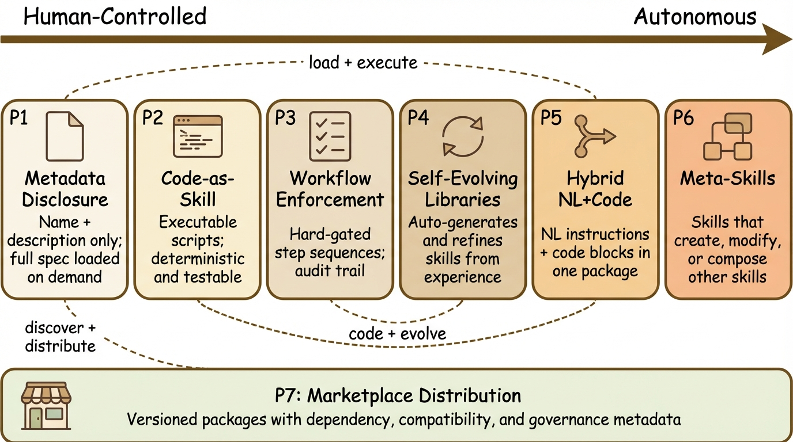
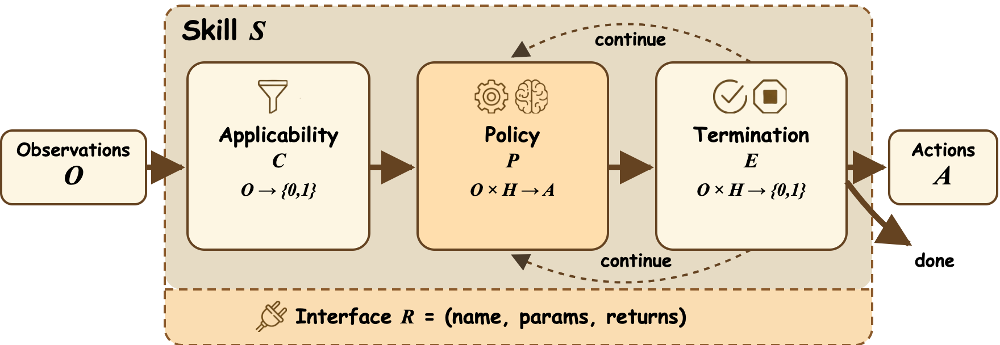
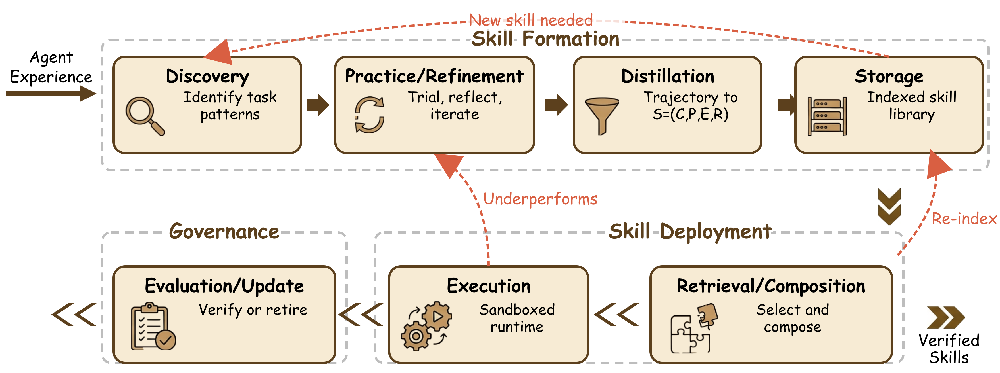
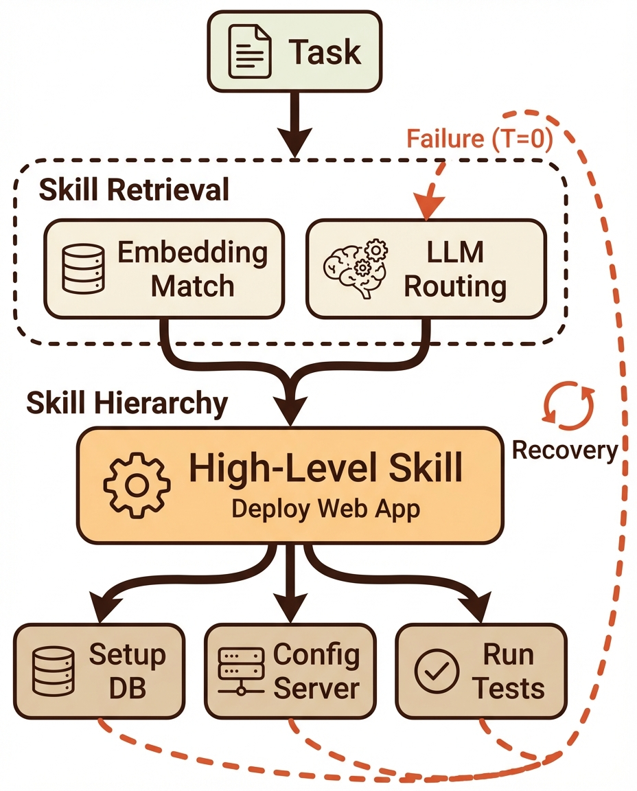
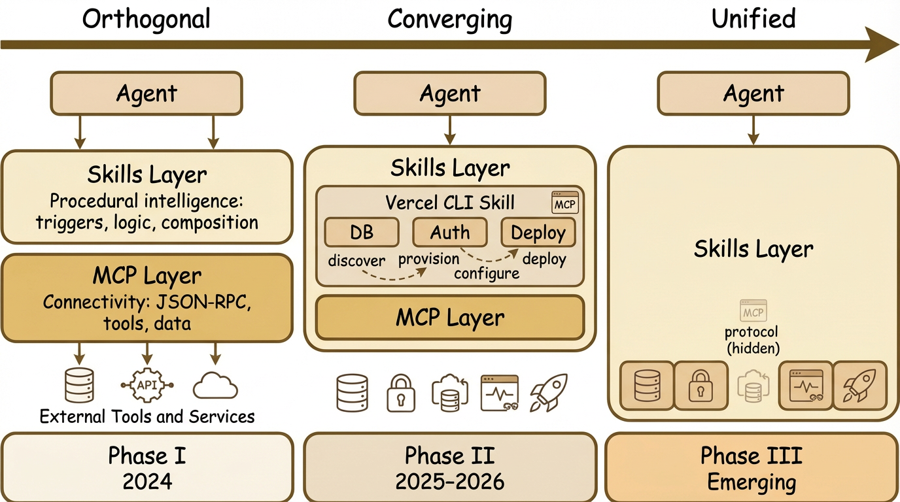
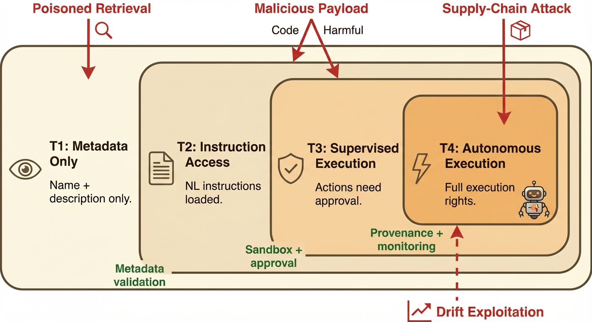
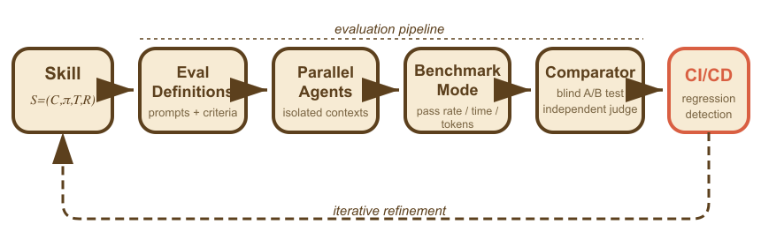

arXiv preprint · 2026 · survey paper
SoK: Agentic Skills - Beyond Tool Use in LLM Agents
A systematization of how reusable procedural modules are defined, acquired, executed, secured, and evaluated in modern LLM agent systems.

Summary
What this paper contributes
A unified skill abstraction
Skills are formalized as reusable modules with applicability, execution policy, termination, and interface.
A lifecycle model
Discovery, refinement, distillation, storage, composition, execution, and update are treated as one pipeline.
A production-facing lens
The paper connects representation to trust tiers, supply-chain risk, deterministic evaluation, and governance.
Abstract
A survey of the skill layer in agent systems
Agentic systems increasingly rely on reusable procedural capabilities, or agentic skills, to execute long-horizon workflows reliably. This paper argues that the skill layer deserves its own systems view: not just how a model calls a tool once, but how reusable procedures are discovered, stored, governed, and evaluated over time.
The survey introduces two complementary organizing lenses. The first is a seven-pattern taxonomy for how skills are represented and deployed in real systems, from metadata-driven disclosure and executable code skills to self-evolving libraries and marketplace distribution. The second is an orthogonal representation-by-scope view that separates what a skill is from where it operates.
Beyond taxonomy, the paper treats skills as a security and operations problem. It analyzes trust tiers, prompt-injection-style skill payloads, supply-chain risks in skill marketplaces, and deterministic evaluation pipelines for deciding whether a skill helps in practice.
Framework
What counts as an agentic skill
S = (C, pi, T, R)
Applicability condition, executable policy, termination condition, and reusable callable interface.
Executable
Reusable
Composable
Governable
The paper positions skills between tools, plans, memory, and prompt templates. Tools are atomic calls. Plans are one-off reasoning scaffolds. Memory stores observations. Skills are reusable procedural modules that can be invoked again under recurring conditions.
That distinction matters because it shifts the question from single-turn tool use to durable procedural knowledge that can be retrieved, verified, and maintained like infrastructure.


Lifecycle
Skills are treated as evolving system components
Discovery
Identify recurring task patterns, bottlenecks, or failure modes worth encapsulating.
Practice and refinement
Improve candidate procedures through execution feedback, reflection, or external supervision.
Distillation
Compress successful trajectories into a reusable procedural artifact with explicit boundaries.
Storage and retrieval
Index skills, manage versions, and route the right skill into the right runtime context.
Execution and update
Run within permission boundaries, then regress, refine, or retire based on evidence.
Patterns
Seven recurrent ways systems package and expose skills
The taxonomy is intentionally non-exclusive: strong systems often combine multiple patterns.
Metadata-driven disclosure
Load compact metadata first, and only expand the full skill when it is selected.
Code-as-skill
Represent skills as executable procedures with deterministic behavior.
Workflow enforcement
Constrain agent behavior through hard-gated methods and ordered recovery flow.
Self-evolving libraries
Absorb successful trajectories back into the library as new or revised skills.
Hybrid NL + code skills
Combine human-readable instructions with scripts, tools, and references.
Meta-skills
Use one skill to author, modify, or orchestrate other skills.
Marketplace distribution
Publish portable skill packages that scale reuse and expand the supply-chain surface.


Security
Skill ecosystems inherit the supply-chain problem
Threats the paper emphasizes
- Poisoned skill retrieval through adversarial metadata
- Malicious payloads in code or natural-language skill bodies
- Cross-tenant leakage and confused-deputy behavior
- Applicability-condition poisoning and skill drift
The paper grounds governance in a real marketplace incident: 1,184 malicious skills, 36.8% flawed listings in one audit, and credential theft spanning API keys, wallets, browsers, and SSH keys.

Evaluation
The strongest empirical result is about curation, not raw generation
Curated skills
Average pass-rate lift in SkillsBench, from 24.3% to 40.6%.
Self-generated skills
Average degradation relative to the no-skills baseline in open-ended settings.
Trajectories
Benchmark scale cited in the paper's SkillsBench case study.
Evaluation dimensions
Correctness, robustness, efficiency, generalization, and safety.

The paper's evaluation stance is pragmatic. What matters is not whether a skill looks elegant in isolation, but whether it reliably improves downstream outcomes under deterministic verification.
That is why the survey elevates benchmark harnesses, outcome-based verification, and industrial regression infrastructure. In this framing, a skill is closer to production logic than to a clever prompt.
Citation
Cite the paper directly
@article{jiang2026agenticskills,
title = {SoK: Agentic Skills - Beyond Tool Use in LLM Agents},
author = {Jiang, Yanna and Li, Delong and Deng, Haiyu and Ma, Baihe and
Wang, Xu and Wang, Qin and Yu, Guangsheng},
journal = {arXiv preprint arXiv:2602.20867},
year = {2026}
}